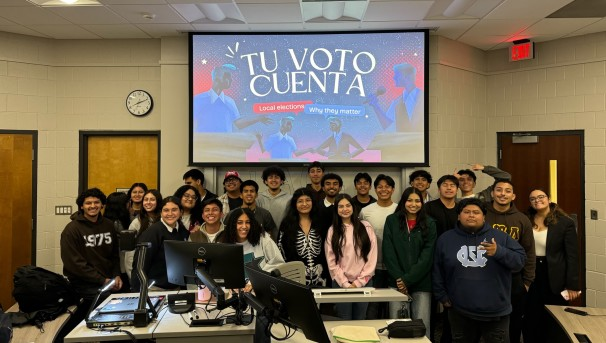

Empowering the Latinx Community
Empowering the Latinx community through education, advocacy, and outreach to inspire social, economic, and political change.

Empowering the Latinx community through education, advocacy, and outreach to inspire social, economic, and political change.

LACE organizes events, workshops, and outreach programs to connect members, provide educational opportunities, and strengthen community ties.

LACE advocates for Latinx individuals, helping them access resources and opportunities that create lasting social and economic change.